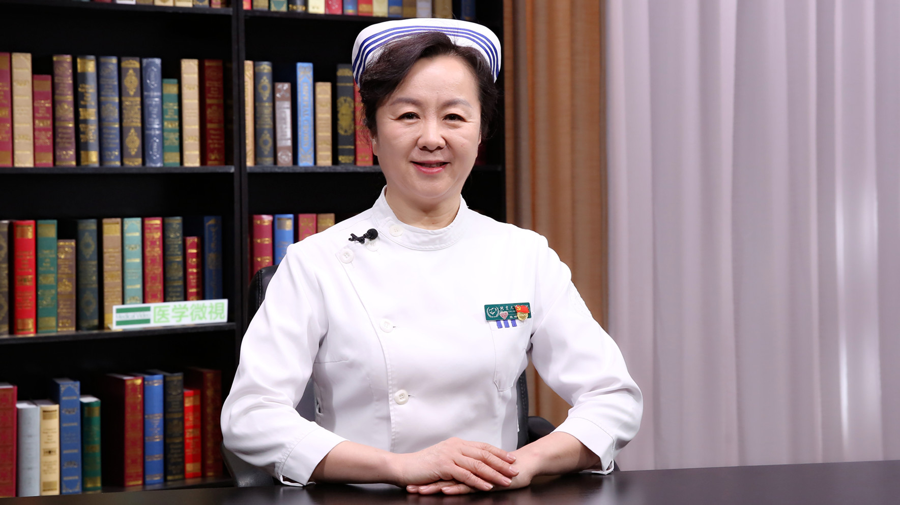

2.7 肠套叠患儿的护理¶
张琳琪 主任护师¶

国家儿童医学中心 首都医科大学附属北京儿童医院护理部主任 主任护师；
首都医科大学临床护理学院儿童学系主任；首都医科大学临床护理学院院务委员会常务委员 ；中华护理学会理事 科普工作委员会副主任委员；中华护理学会儿科专业委员会副主任委员 ；中华医学会儿科分会护理学组副组长；北京护理学会副秘书长 ；北京护理学会儿科专业委员会主任委员。
主要成就： 《材料管理》专刊副主编；《中华护理杂志》《中华现代护理杂志》《护理管理杂志》《中国护理管理》《护理研究》《护理学报》编委；国家临床重点专科（儿科护理）项目负责人；近5年主编或参编专业书籍10余部。
专业特长： 自1985年在北京儿童医院工作以来，一直从事儿科临床护理、护理管理工作，擅长护理岗位垂直管理，并取得很好成效。
孩子出现“剧烈腹痛、呕吐、血便、腹部包块”，警惕小儿肠套叠！¶
孩子出现“剧烈腹痛、呕吐、血便、腹部包块”，警惕小儿肠套叠！
（采访）出现肠套叠之后，患儿会有哪些表现？
肠套叠的表现,首先就是腹痛。
但是在孩子突然的这种剧烈疼痛，他就哭闹，因为小孩不会描述说我肚子疼，他就突然的剧烈哭闹。
疼痛是很严重的，所以孩子会面色苍白、屈腿、抱住腿。
孩子也会就拒乳，就是说不再吃东西了，但是持续几分钟以后，就安静了。
而且有的孩子就能够入睡了，可是隔几十分钟或者十几分钟就又发作了，这种反复发作的，这就是肠套叠的一个疼痛的表现。
除了疼痛，还有呕吐，吐奶，有时候还会有吐胆汁和十二指肠液，甚至也会有一些粪便样的东西。如果病程比较长，家长没有及时来就医，超过48个小时，孩子频繁的这种呕吐就会出现脱水了。
还有一个肠套叠的典型表现就是血便。在他刚刚发病的时候，前1、2次是正常的大便。但是8-12小时以后，就会排出来红色的、果酱样的大便了，这就是血便，是一个肠套叠的典型表现。
到了医院以后，医生可能会做肛门的指检，检查也会有血，是肠套叠的一个血便的表现。
腹部还会有一个包块，在右上腹会有一个像腊肠一样的包块，它是光滑的、可以活动的。而且右下腹，会有这种空虚感。
这几个都是肠套叠的典型的表现。
（采访）有没有说哪个年龄段的儿童，容易出现肠套叠？
肠套叠主要是在2岁以前的孩子容易发生，最多的是4-10个月的孩子，容易发生肠套叠。
随着年龄的增长，肠套叠发病率就逐渐的下降，过了5岁就很少有再发生肠套叠的了。
而且男孩和女孩有一个很明显的区别，男孩子比较多，它的比例基本上3-4:1，而且肥胖的孩子，特别容易发生肠套叠。
肠套叠患儿空气灌肠治疗是怎么做的？孩子会有不舒服的感觉吗？¶
肠套叠患儿空气灌肠治疗是怎么做的？孩子会有不舒服的感觉吗？
（采访）采用空气灌肠治疗肠套叠，患儿会有不舒服的感觉吗？
肠套叠的孩子，首选就是气灌肠来治疗疾病。
气灌肠是通过钢管，就是肛门插进一个钢管往里面打气，用气体把套的部分给它冲开，一般情况下1-2分钟就能够给冲开了。
再通过钢管把打进的气排出来，时候可能会闻到一些味道，就是肛管排气会有一些大便排出。
其实肠套叠气灌肠的，一个成功的指征就是孩子变舒服了，是他的症状缓解了。
但是要说孩子不舒服，可能就是因为套着的时候，他的肚子胀，呕吐、肚子疼。还有一个就是在这种治疗的环境下，可能孩子会有一些恐惧的心理。
空气灌肠的时候，因为孩子一般都很哭闹，如果突然他不哭闹了，肚子胀了，就有可能穿孔了，这时候就要停止注气。
治疗手段，其实对孩子来讲没有什么不舒服的。
（采访）采用空气灌肠去治疗肠套叠的成功率怎么样？
非常高。应该说有95%的孩子，通过气灌肠就能够解决了，真正需要手术复位的仅占5%这样子。
肠套叠患儿采用空气灌肠治疗后，为什么要口服活性炭？多久才能正常饮食？¶
肠套叠患儿采用空气灌肠治疗后，为什么要口服活性炭？多久才能正常饮食？
（采访）对于小儿肠套叠，我们采用完空气灌肠之后，为什么还要口服活性炭？
活性炭有两个作用。
活性炭会促进肠蠕动，因为套住了以后，也是影响了肠管的蠕动了，口服了活性炭，它会促进肠蠕动。
另外，活性炭会给大便染色，所以说肠套叠空气灌肠以后，孩子感觉舒服了，判断它是成功的。但是不是真的成功了，必须有大便排出来了，才能够去确认。我不知道大便是肠管套之前的，还是后面的，所以给它染色，口服了以后，再排出来的大便就是带颜色的了。
所以说做了空气灌肠6-8小时，如果能排出这种黑便，就是被染色了的大便，证明空气灌肠就成功了。
孩子也恢复了正常的这种肠蠕动功能，所以口服活性炭就是这两个目的。
（采访）复位成功后，多久能恢复？
就是6-8小时以后，不是我们的口服活性炭，能够排出黑色的大便，就证明肠管已经通了，可以给孩子喝一些水。
但是不能急于说一下子就给孩子吃东西，肠管受损伤了，它有一个恢复的过程，因人而异。
到8小时、10小时，可能给孩子喝一点水，看孩子没有什么反应，就可以给他进食点流食，喝一些奶、米汤这样子的，喝完了以后还没有问题，就喝一些粥，逐渐过渡到正常饮食就可以。
肠套叠患儿手术后应如何护理？¶
肠套叠患儿手术后应如何护理？
（采访）对于做完肠套叠手术后的患儿，该如何去护理他们？
手术后也跟其他的腹部手术一样，要观察，首先看孩子的麻醉。
如果说手术做肠套叠的复位，必须要给孩子全麻，回来以后要观察孩子麻醉是不是清醒。要观察孩子的生命体征，看看他的呼吸是不是正常，看看他的面色、精神等等。
手术回来，还会有一段时间的胃肠减压，要观察胃肠减压，还要观察伤口，看看伤口有没有渗血，是不是正常的。
回来以后，麻醉没有清醒的时候，要平卧、头偏向一侧，预防他的呕吐。
如果清醒以后，慢慢让孩子可以半坐位，直至正常。
第二天鼓励孩子下地活动，尽早的恢复肠功能。
为什么肠套叠患儿治好后还会复发？能预防吗？¶
为什么肠套叠患儿治好后还会复发？能预防吗？
（采访）我们治好了患儿的肠套叠，他以后还会复发吗？
有可能。因为发生肠套叠，就是肠子这一段可能是比较脆弱，或是有一些病变。
所以复位以后，它还有可能再套上，也是因人而异，不是所有的孩子都复发，但是有个别的会复发，也跟他的个体有关系。也跟寒冷、孩子着凉、或者孩子腹泻，也还会发生这种再次套上的可能。
（采访）回到家里以后，如何照顾他们，能尽可能大的避免复发的出现？
所以我们要去除病因，保暖、别让孩子着凉，饮食上注意，别让孩子腹泻，避免这种腹泻，还有就是养成良好的这种排便习惯。
吃东西也是，回去以后一定是循序渐进的，从流食、半流食，到普通的饮食。
不要因为在医院禁食好几天没有吃东西了，回家一下子给很多的东西，就容易刺激非常脆弱的肠管，它有可能又套上了。
所以慢慢增加调整饮食，让孩子吃一些易消化的、清淡的这些食物，逐渐恢复正常饮食。不要暴饮暴食，餐后避免剧烈的活动。
哪些孩子容易得肠套叠？在空气灌肠或手术治疗后，饮食上应如何护理？¶
哪些孩子容易得肠套叠？在空气灌肠或手术治疗后，饮食上应如何护理？
（采访）有没有说哪个年龄段的儿童，容易出现肠套叠？
肠套叠主要是在2岁以前的孩子容易发生，最多的是4-10个月的孩子。随着年龄的增长，肠套叠发病率就逐渐的下降，过了5岁就很少有再发生肠套叠的了。
而且肠套叠有很明显的男孩和女孩的区别，男孩子比较多，它的比例基本上3-4:1。
而且肥胖的孩子，容易发生肠套叠。
（采访）对于肠套叠的患儿，他的肠功能恢复之后，在饮食上该如何去照顾他们？
因为4-10个月的孩子，一般都已经开始给辅食了。但是肠套叠术后，不管是气灌肠，还是手术，回去以后先暂时不要添加辅食，先给孩子喝一些奶制品，慢慢的看孩子情况，再添加半流质的辅食。
大一点的孩子还是这样，清淡的、易消化的，从流食、半流食，到正常的普通饮食。等孩子肠功能完全恢复了以后，我们再恢复正常的饮食。